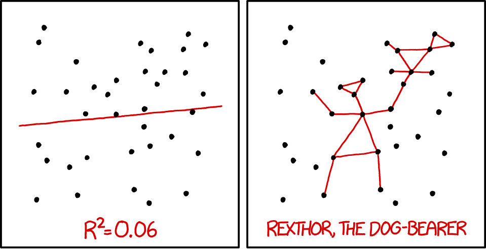

Supervised learning
| Data Analytics for Psychology and Business |

|

from xkcd.com
Overview
By the end of this practical you will know how to:
- Fit regression, decision trees and random forests to training data.
- Evaluate model fitting and prediction performance in a test set.
- Compare the fitting and prediction performance of models.
- Use model tuning to improve model performance.
Tasks
A - Setup
Open your
dataanalyticsR project. It should already have the folders1_Dataand2_Code.Download the college and place it into your
1_Datafolder.Open a new R script. At the top of the script, using comments, write your name and the date. Save it as a new file called
supervised_learning_practical.Rin the2_Codefolder.Using
library()load the set of packages for this practical listed in the packages section above. If you are missing packages, install them first usinginstall.packages().
# install.packages("tidyverse")
# install.packages("caret")
# install.packages("party")
# install.packages("partykit")
# Load packages necessary for this script
library(tidyverse)
library(caret)
library(party)
library(partykit)- Run the code below to load the
collegeas a new object.
# College data
college <- read_csv(file = "1_Data/college.csv")- Take a look at the first few rows of each dataframe by printing them to the console.
# Print dataframes to the console
college- Explore the data set using
View()andnames()to get a feel for the variables contained within it. Also see the Dataset tab for feature descriptions.
B - Data preparation
- Before we get started you need to do some data preparation. First order of business: change all character variables to factors using the code below.
# Convert all character columns to factor
college <- college %>% mutate_if(is.character, factor)- Now, before you get started with fitting models, it’s time to split off a test set. Use the code below to apply a 80/20 split. Note the the function
createDataPartitionneeds to be supplied with the criterion, which is the graduation rate (Grad.Rate).
# split index
train_index <- createDataPartition(XX$XX, p = .2, list = FALSE)
# train and test sets
college_train <- XX %>% slice(train_index)
college_test <- XX %>% slice(-train_index)C - Fitting
- In fitting models,
caretneeds to be supplied with atrainControl()object. To start with define an object calledctrl_nonethat sets the training control method to"none".
# Set training method to "none" for simple fitting
ctrl_none <- trainControl(method = "XX")Regression
- Using
train()fit a regression model calledgrad_glmpredictingGrad.Rateas a function of all features. Specifically,…
- for the
formargument, useGrad.Rate ~ .. - for the
dataargument, usecollege_traint. - for the
methodargument, usemethod = "glm". - for the
trControlargument, use yourctrl_none.
grad_glm <- train(form = XX ~ .,
data = XX,
method = "XX",
trControl = ctrl_none)- Explore your
grad_glmobject by looking atgrad_glm$finalModeland usingsummary(), what do you find?
grad_glm$XX
summary(XX)- Using
predict()save the fitted values ofgrad_glmobject asglm_fit.
# Save fitted values of regression model
glm_fit <- predict(XX)- Print your
glm_fitobject, look at summary statistics withsummary(glm_fit), and create a histogram withhist()do they make sense?
# Explore regression model fits
XX
summary(XX)
hist(XX)Decision Trees
- Using
train(), fit a decision tree model calledgrad_rpart. Specifically,…
- for the
formargument, useGrad.Rate ~ .. - for the
dataargument, usecollege_train. - for the
methodargument, usemethod = "rpart". - for the
trControlargument, use yourctrl_none. - for the
tuneGridargument, usecp = 0.01to specify the value of the complexity parameter. This is a pretty low value which means your trees will be, relatively, complex, i.e., deep.
grad_rpart <- train(form = XX ~ .,
data = XX,
method = "XX",
trControl = XX,
tuneGrid = expand.grid(cp = XX))Explore your
grad_rpartobject by looking atgrad_rpart$finalModeland plotting it withplot(as.party(grad_rpart$finalModel)), what do you find?Using
predict(), save the fitted values ofgrad_rpartobject as_fit.
# Save fitted values of decision tree model
rpart_fit <- predict(XX)- Print your
rpart_fitobject, look at summary statistics withsummary(), and create a histogram withhist(). Do they make sense?
# Explore decision tree fits
XX
summary(XX)
hist(XX)Random Forests
- Using
train(), fit a random forest model calledgrad_rf. Speicifically,…
- for the
formargument, useGrad.Rate ~ .. - for the
dataargument, usecollege_train. - for the
methodargument, usemethod = "rf". - for the
trControlargument, use yourctrl_none. - for the
mtryparameter, usemtry= 2. This is a relatively low value, so the forest will be very diverse.
grad_rf <- train(form = XX ~ .,
data = XX,
method = "XX",
trControl = XX,
tuneGrid = expand.grid(mtry = XX)) - Using
predict(), save the fitted values ofgrad_rfobject asrf_fit.
# Save fitted values of random forest model
rf_fit <- predict(XX)- Print your
rf_fitobject, look at summary statistics withsummary(), and create a histogram withhist(). Do they make sense?
# Explore random forest fits
XX
summary(XX)
hist(XX)D - Evaluate fitting performance
- Save the true training criterion values (
college_train$Grad.Rate) as a vector calledcriterion_train.
# Save training criterion values
criterion_train <- XX$XX- Using
postResample(), determine the fitting performance of each of your models separately. Make sure to set yourcriterion_trainvalues to theobsargument, and your true model fitsXX_fitto thepredargument.
# Regression
postResample(pred = XX, obs = XX)
# Decision Trees
postResample(pred = XX, obs = XX)
# Random Forests
postResample(pred = XX, obs = XX)- Which one had the best fit? What was the fitting MAE of each model?
E - Evaluate prediction perforamnce
- Save the criterion values from the test data set
college_test$Grad.Rateas a new vector calledcriterion_test.
# Save criterion values
criterion_test <- XX$XX- Using
predict(), save the predicted values of each model for the test datacollege_testasglm_pred,rpart_predandrf_pred. Set thenewdataargument to the test data.
# Regression
glm_pred <- predict(XX, newdata = XX)
# Decision Trees
rpart_pred <- predict(XX, newdata = XX)
# Random Forests
rf_pred <- predict(XX, newdata = XX)- Using
postResample(), determine the prediction performance of each of your models against the test criterioncriterion_test.
# Regression
postResample(pred = XX, obs = XX)
# Decision Trees
postResample(pred = XX, obs = XX)
# Random Forests
postResample(pred = XX, obs = XX)How does each model’s prediction or test performance (on the
XX_testdata) compare to its fitting or training performance (on theXX_traindata)? Is it worse? Better? The same? What does the change tell you about the models?Which of the three models has the best prediction performance?
F - Tuning
- Now let’s see whether we can crank out more performance by tuning the models during fitting. To do set, first create a new control object called
ctrl_cvthat sets the trainingmethodto cross validation"cv"and the number of slices to10. Use this new control object to re-fit the three models.
# Set training method to "none" for simple fitting
ctrl_cv <- trainControl(method = "XX", number = XX)LASSO Regression
- Before you can fit a lasso regression model, you need to specify which values of the lambda penalty parameter we want to try. Using the code below, create a vector called
lambda_vecwhich contains 100 values spanning a wide range, from very close to 0 to 1,000.
# Vector of lambda values to try
lambda_vec <- 10 ^ (seq(-4, 4, length = 100))- Fit a lasso regression model predicting
Grad.Rateas a function of all features. Specifically,…
- set the formula to
Grad.Rate ~ .. - set the data to
college_train. - set the method to
"glmnet"for regularized regression. - set the train control argument to
ctrl_cv. - set the
preProcessargument toc("center", "scale")to make sure the variables are standarised when estimating the beta weights, which is specifically necessary for regularized regression. - set the tuneGrid argument such that
alphais 1 (for lasso regression), and lambda is vector you specified inlambda_vec(see below)
# lasso regression
grad_tune_glm <- train(form = XX ~ .,
data = XX,
method = "XX",
trControl = XX,
preProcess = c("XX", "XX"),
tuneGrid = expand.grid(alpha = 1,
lambda = lambda_vec))Print your
grad_tune_glmobject. What do you see?Plot your
grad_tune_glmobject. What do you see? Which value of the regularization parameter seems to be the best?
# Plot grad_tune_glm object
plot(XX)- What were your final regression model coefficients for the best lambda value? Find them by running the following code.
# Get coefficients from best lambda value
coef(grad_tune_glm$finalModel,
grad_tune_glm$bestTune$lambda)Decision tree
Before fitting the decision tree, specify which values of the complexity parameter
cpto try. Using the code below, create a vector calledcp_vecwhich contains 100 values between 0 and 1.Fit a decision tree model predicting
Grad.Rateas a function of all features. Specifically,…
- set the formula to
Grad.Rate ~ .. - set the data to
college_train. - set the method to
"rpart". - set the train control argument to
ctrl_cv. - set the tuneGrid argument with all
cpvalues you specified incp_vec.
# Decision tree
grad_tune_rpart <- train(form = XX ~ .,
data = XX,
method = "XX",
trControl = XX,
tuneGrid = expand.grid(cp = cp_vec))Print your
grad_tune_rpartobject. What do you see?Plot your
grad_tune_rpartobject. What do you see? Which value of the complexity parameter seems to be the best?
# Plot grad_tune_rpart object
plot(XX)- Print the best value of
cpby running the following code. Does this match what you saw in the plot above?
# Print best regularisation parameter
grad_tune_rpart$bestTune$cp- Plot your final decision tree using the following code:
# Visualise your trees
plot(as.party(grad_tune_rpart$finalModel)) Random forest
Before fitting a random forest model, specify which values of the diversity parameter
mtryto try. Using the code below, create a vector calledmtry_vecwhich is a sequence of numbers from 1 to 10.Fit a random forest model predicting
Grad.Rateas a function of all features. Specifically,…
- set the formula to
Grad.Rate ~ .. - set the data to
college_train. - set the method to
"rf". - set the train control argument to
ctrl_cv. - set the tuneGrid argument such that mtry can take on the values you defined in
mtry_vec.
# Random Forest
grad_tune_rf <- train(form = XX ~ .,
data = XX,
method = "XX",
trControl = XX,
tuneGrid = expand.grid(mtry = mtry_vec))Print your
grad_tune_rfobject. What do you see?Plot your
grad_tune_rfobject. What do you see? Which value of the regularization parameter seems to be the best?
# Plot grad_rf object
plot(XX)- Print the best value of
mtryby running the following code. Does this match what you saw in the plot above?
# Print best mtry parameter
grad_tune_rf$bestTune$mtryF - Evaluation prediction performance of tuned models
- Using
predict(), save the predicted values of each tuned model for the test datacollege_testasglm_tune_pred,rpart_tune_predandrf_tune_pred. Set thenewdataargument to the test data.
# Regression
glm_tune_pred <- predict(XX, newdata = XX)
# Decision Trees
rpart_tune_pred <- predict(XX, newdata = XX)
# Random Forests
rf_tune_pred <- predict(XX, newdata = XX)- Using
postResample(), determine the prediction performance of each of your models against the test criterioncriterion_test.
# Regression
postResample(pred = XX, obs = XX)
# Decision Trees
postResample(pred = XX, obs = XX)
# Random Forests
postResample(pred = XX, obs = XX)How does each model’s tuned prediction performance compare to its prediction performance without tuning? Is it worse? Better? The same? What does the change tell you about the models?
Which of the three models has the best prediction performance?
X - Optional: Classification
- Evaluate which model can best predict, whether a school is
Private. Note, it is not necessary to again perform the splitting. Jump right in using the existingcollege_trainandcollege_testdatasets. You can follow the same steps as above. Simply change the criterion toPrivateand useconfusionMatrix()instead ofpostResample().
Examples
# Fitting, tune evaluating regression, decision trees, and random forests
# Step 0: Load packages-----------
library(tidyverse)
library(caret)
library(partykit)
library(party)
# Step 1: Load, Clean, Split, and Explore data ----------------------
# mpg data
data(mpg)
# Explore data
data_train
View(mpg)
dim(mpg)
names(mpg)
# Convert all characters to factor
mpg <- mpg %>% mutate_if(is.character, factor)
# split index
train_index <- createDataPartition(mpg$hwy, p = .2, list = FALSE)
# train and test sets
data_train <- mpg %>% slice(train_index)
data_test <- mpg %>% slice(-train_index)
# Step 2: Define training control parameters -------------
# Set method = "none" for now
ctrl_none <- trainControl(method = "none")
# Step 3: Train model: -----------------------------
# Regression -------
# Fit model
hwy_glm <- train(form = hwy ~ year + cyl + displ,
data = data_train,
method = "glm",
trControl = ctrl_none)
# Look at summary information
hwy_glm$finalModel
summary(hwy_glm)
# Save fitted values
glm_fit <- predict(hwy_glm)
# Calculate fitting accuracies
postResample(pred = glm_fit,
obs = criterion_train)
# Decision Trees -------
# Fit model
hwy_rpart <- train(form = hwy ~ year + cyl + displ,
data = data_train,
method = "rpart",
trControl = ctrl_none,
tuneGrid = expand.grid(cp = .01)) # Set complexity parameter
# Look at summary information
hwy_rpart$finalModel
plot(as.party(hwy_rpart$finalModel)) # Visualise your trees
# Save fitted values
rpart_fit <- predict(hwy_rpart)
# Calculate fitting accuracies
postResample(pred = rpart_fit, obs = criterion_train)
# Random Forests -------
# fit model
hwy_rf <- train(form = hwy ~ year + cyl + displ,
data = data_train,
method = "rf",
trControl = ctrl_none,
tuneGrid = expand.grid(mtry = 2)) # Set number of features randomly selected
# Look at summary information
hwy_rf$finalModel
# Save fitted values
rf_fit <- predict(hwy_rf)
# Calculate fitting accuracies
postResample(pred = rf_fit, obs = criterion_train)
# Step 5: Evaluate prediction ------------------------------
# Define criterion_train
criterion_test <- data_test$hwy
# Save predicted values
glm_pred <- predict(hwy_glm, newdata = data_test)
rpart_pred <- predict(hwy_rpart, newdata = data_test)
rf_pred <- predict(hwy_rf, newdata = data_test)
# Calculate fitting accuracies
postResample(pred = glm_pred, obs = criterion_test)
postResample(pred = rpart_pred, obs = criterion_test)
postResample(pred = rf_pred, obs = criterion_test)
# Step 6: Modeling tuning ------------------------------
# Use 10-fold cross validation
ctrl_cv <- trainControl(method = "cv",
number = 10)
# Lasso
lambda_vec <- 10 ^ seq(-3, 3, length = 100)
hwy_lasso <- train(form = hwy ~ year + cyl + displ,
data = data_train,
method = "glmnet",
trControl = ctrl_cv,
preProcess = c("center", "scale"),
tuneGrid = expand.grid(alpha = 1,
lambda = lambda_vec))
# decision tree
cp_vec <- seq(0, .1, length = 100)
hwy_rpart <- train(form = hwy ~ year + cyl + displ,
data = data_train,
method = "rpart",
trControl = ctrl_cv,
tuneGrid = expand.grid(cp = cp_vec))
# decision tree
mtry_vec <- seq(2, 5, 1)
hwy_rpart <- train(form = hwy ~ year + cyl + displ,
data = data_train,
method = "rf",
trControl = ctrl_cv,
tuneGrid = expand.grid(mtry = mtry_vec))
# Step 7: Evaluate tuned models ------------------------------
# you know how ... Dataset
| File | Rows | Columns |
|---|---|---|
| college.csv | 777 | 18 |
The college data are taken from the College dataset in the ISLR package. They contain statistics for a large number of US Colleges from the 1995 issue of US News and World Report.
Variable description
| Name | Description |
|---|---|
Private |
A factor with levels No and Yes indicating private or public university. |
Apps |
Number of applications received. |
Accept |
Number of applications accepted. |
Enroll |
Number of new students enrolled. |
Top10perc |
Pct. new students from top 10% of H.S. class. |
Top25perc |
Pct. new students from top 25% of H.S. class. |
F.Undergrad |
Number of fulltime undergraduates. |
P.Undergrad |
Number of parttime undergraduates. |
Outstate |
Out-of-state tuition. |
Room.Board |
Room and board costs. |
Books |
Estimated book costs. |
Personal |
Estimated personal spending. |
PhD |
Pct. of faculty with Ph.D.’s. |
Terminal |
Pct. of faculty with terminal degree. |
S.F.Ratio |
Student/faculty ratio. |
perc.alumni |
Pct. alumni who donate. |
Expend |
Instructional expenditure per student. |
Grad.Rate |
Graduation rate. |
Functions
Packages
| Package | Installation |
|---|---|
tidyverse |
install.packages("tidyverse") |
caret |
install.packages("caret") |
partykit |
install.packages("partykit") |
party |
install.packages("party") |
Functions
| Function | Package | Description |
|---|---|---|
trainControl() |
caret |
Define modelling control parameters |
train() |
caret |
Train a model |
predict(object, newdata) |
stats |
Predict the criterion values of newdata based on object |
postResample() |
caret |
Calculate aggregate model performance in regression tasks |
confusionMatrix() |
caret |
Calculate aggregate model performance in classification tasks |
Resources
Cheatsheet
from github.com/rstudio